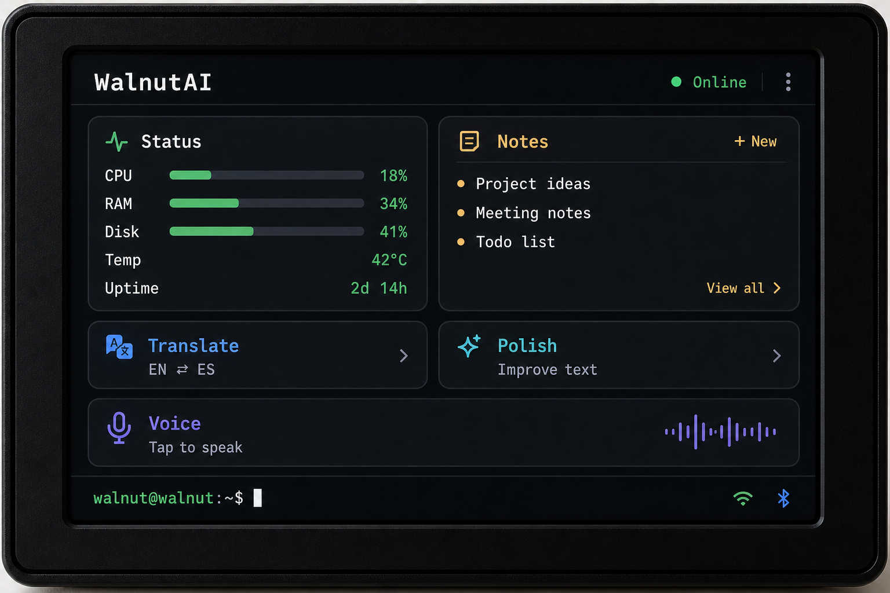
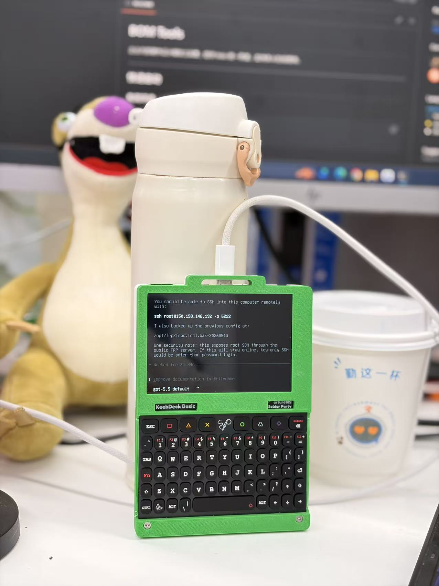

App 是入口
每个需求都对应一个应用。用户先找入口，再学界面，再完成操作。
Nervus / AI Native Personal Terminal OS
Nervus 是一个面向 AI 时代的轻量级个人终端系统，把传统“应用入口”升级为“智能体入口”，让低成本硬件也能成为随身 AI 终端。
它不是一个单独的聊天机器人，也不是普通 Web App，而是一套从 Core 控制平面、模型路由、事件系统、卡片式交互界面，到硬件终端适配的完整 AI Native OS 原型。
当 AI 从 App 功能变成系统能力，真正的价值不只是模型回答了什么，而是谁掌握了用户与智能体之间长期、稳定、可持续的终端入口。
第一阶段已经在 WalnutPi 这类低成本 ARM 小板上推进可运行版本，验证“云端大模型 + 本地轻量终端 + 卡片式交互”的设备形态。
The Shift
过去十几年，个人计算入口是手机 App、浏览器、桌面软件和小程序。AI 出现后，用户不再想打开多个 App 操作，而是希望直接表达意图，由系统理解、调用工具、呈现结果，并持续记住上下文。
每个需求都对应一个应用。用户先找入口，再学界面，再完成操作。
AI 已经能理解意图，但大多数产品仍停留在问答界面，没有进入系统层。
用户只表达目标，系统负责路由模型、调用应用、组织状态与记忆。
下一代个人终端不该只是装 App 的设备，而应该是一个 AI Native 的操作入口。
The Gap
这解释了为什么市场上 AI 很热，但真正高频、常驻、独立的个人 AI 终端还没有形成。问题不是模型不够强，而是缺一层系统。
缺少统一事件流、应用注册与调用机制、长期记忆和上下文管理，AI 无法成为真正可运行的终端系统。
用户仍被 App 和复杂屏幕结构绑架。低功耗、低成本、专用型 AI 设备仍缺成熟系统底座。
硬件厂商缺 AI OS，AI 应用缺稳定终端入口，用户缺一个真正日常可用的个人智能终端。
Nervus 不是又一个 AI App。
它试图定义的是 AI 时代的个人终端系统。
The System
Nervus 的核心方案不是把大模型塞进终端，而是把云端智能能力与本地交互系统明确分层。云端负责推理、复杂任务和长期智能能力，本地负责设备状态、轻量交互、卡片渲染和离线可用的基础功能。
提供应用注册、Flow 加载、模型管理、事件系统、状态 API、通知 API 和卡片 Widget 扩展基础。
已具备模型配置体系，可接 DeepSeek、Claude、GPT、GLM、Qwen、Groq、MiniMax 等，后续可演进为成本优先、速度优先和多模型协作路由。
采用命令行式输入和结构化卡片输出，已经实现 `/status`、`/help`、`/note`、`/clear`、`/ui/shell` 和 `nervus.card.v1` 协议。
从 480×320 小屏设备到桌面常驻终端，再到家庭和边缘节点，共用同一套系统模型、事件和卡片交互框架。
The Interface
Nervus 的界面不是传统应用列表。用户直接说出目标，系统返回的不是一段泛化文本，而是设备状态卡片、日程卡片、提醒卡片、笔记卡片和模型回复卡片。它天然适合小屏设备、桌面常驻终端、车载与家居屏、可穿戴和低成本 AI 硬件。
/status 记一下今天下午要去体检 帮我总结今天的安排 提醒我晚上复盘项目


The Proof
当前已在 WalnutPi 路线推进首个轻量终端版本，目标是验证：即使是低成本 ARM 小板，也可以运行一个 AI Native 的个人终端系统。已建立的目标硬件画像包括 ARM64、Debian 12、480×320 SPI LCD、ST7796 framebuffer、ADS7846 touch 和低功耗轻量终端定位。
这张实拍图的意义不只是“有硬件”，而是说明 Nervus 正在从聊天产品跨向设备级产品：系统、交互、设备和服务开始进入同一条路径。
Why It Matters
Nervus 的价值不在于多做了一个 AI 助手，而在于它把模型、应用、事件、记忆、设备状态和卡片 UI 放进同一套系统里，朝真正的个人智能体入口推进。
不是聊天工具，而是 AI 时代的新入口。
云端大模型加本地轻量系统，适合规模化硬件落地。
持续运行、管理上下文、连接应用、处理事件并常驻终端。
可同时面向开发者、硬件厂商、个人用户和企业场景。
未来每个设备都可以成为一个共享身份和记忆的 Nervus 节点。
The Window
AI 模型能力已经足够强，但用户入口还没有完成迁移。手机厂商做的是封闭而沉重的系统级 AI，AI 硬件公司多在做单点设备，开源 Agent 框架偏开发者导向，普通用户仍缺一个真正可持续使用的个人 AI 入口。
Nervus 切入的是这中间的空白：
一个开放、轻量、可硬件化、可扩展的 AI 原生终端系统。
Monetization
Nervus 的结构天然支持平台化。它既可以做终端硬件，也可以输出系统、SDK 和订阅服务，还可以服务垂直行业设备。
桌面小屏助手、家庭 AI 控制器、个人工作台终端、特定行业终端。
Nervus Core、Device Runtime、卡片 UI、模型路由和 Agent SDK。
多模型 AI 服务、长期记忆、自动化工作流、个人数据管理和高级 Agent 能力。
智能家居、健康管理、教育陪伴、办公自动化和轻量工业终端。
Roadmap
当前阶段的目标不是堆功能，而是把核心闭环跑通并稳定下来：系统可启动、Shell 可交互、卡片可显示、设备状态可读取、模型可接入，并支持后续容器化部署和真实设备体验升级。
Core 可启动，Shell 可交互，卡片 UI 可显示，模型接口可接入，设备状态可读取。
开机自启动、全屏 kiosk、触摸输入优化、语音输入输出、日程提醒笔记和设备控制场景。
一个低成本、常驻、可感知、可行动的个人 AI 终端，开始建立用户与智能体的长期关系。
Investor Lens
Nervus 的价值不在于“又做了一个 AI 助手”，而在于它试图占据 AI 时代的新入口。谁掌握终端入口，谁就更有机会掌握用户与智能体的长期关系。
不和手机 OS 直接对撞，从轻量个人终端切入。
用 ARM 小板和小屏设备尽快跑出真实用户体验。
长期壁垒不是单模型效果，而是系统架构、终端入口和设备网络。
既能做终端产品，也能做授权、SDK 和行业方案。
Elevator Pitch
我们正在构建一套面向 AI 时代的轻量终端系统，让低成本硬件也能成为用户的常驻 AI 助手。它不是一个聊天 App，而是包含模型路由、事件系统、应用注册、卡片交互和硬件适配的完整 AI 终端平台。